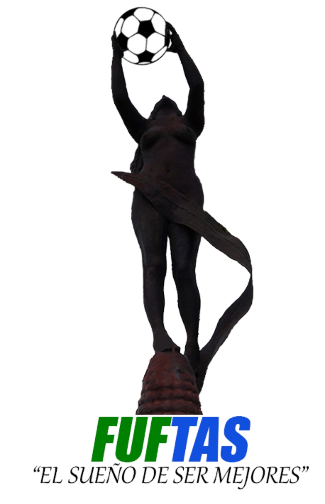

FUFTAS

¿Cual es el objetivo de FUFTAS?
El objetivo de esta fundacion es aportar al desarrolllo sostenible de la sociedad, y en especial a los niños, niñas y adolescentes en lo humano, deportivo, social, de una manera colectiva, en igualdad de condiciones de genero y estrato social, garantizándole a la comunidad un sano esparcimiento, aprovechamiento del tiempo libre, de recreación y proyección al alto rendimiento, teniendo como base las comunidades rurales y urbanas de la república de colombia